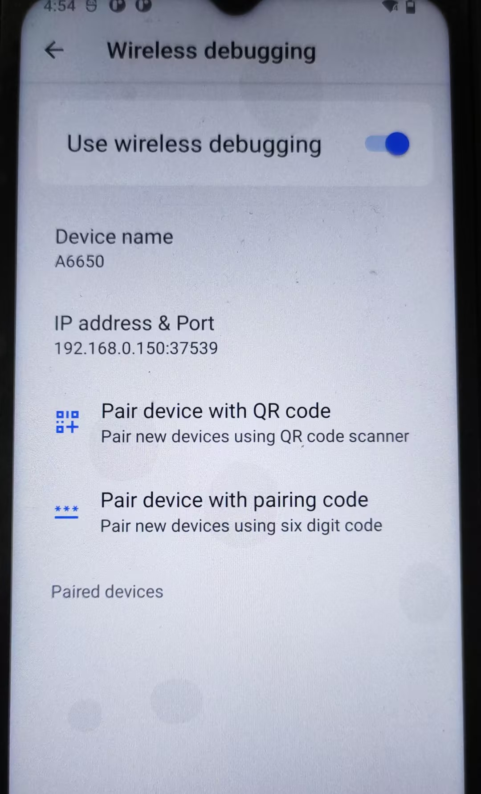
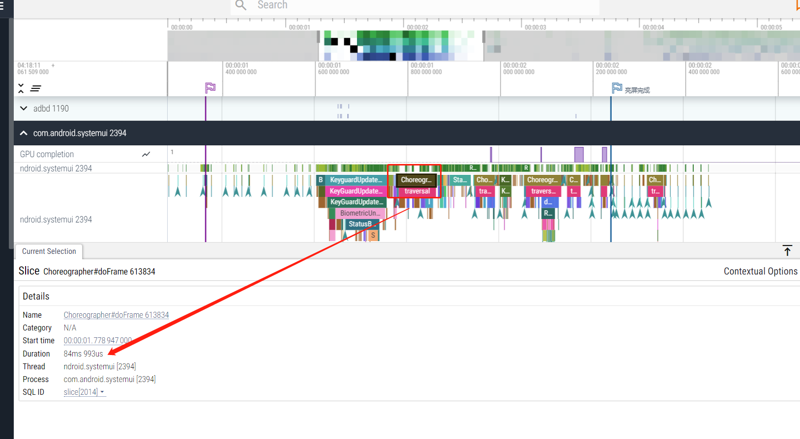
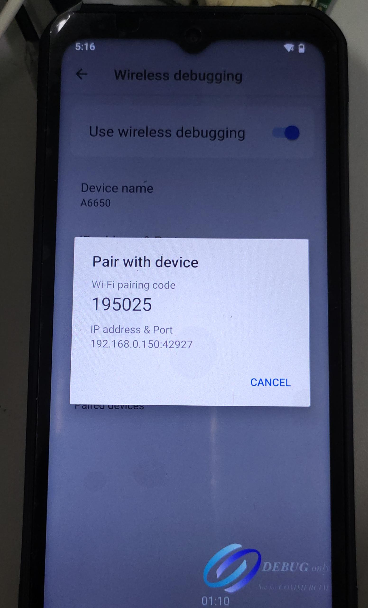
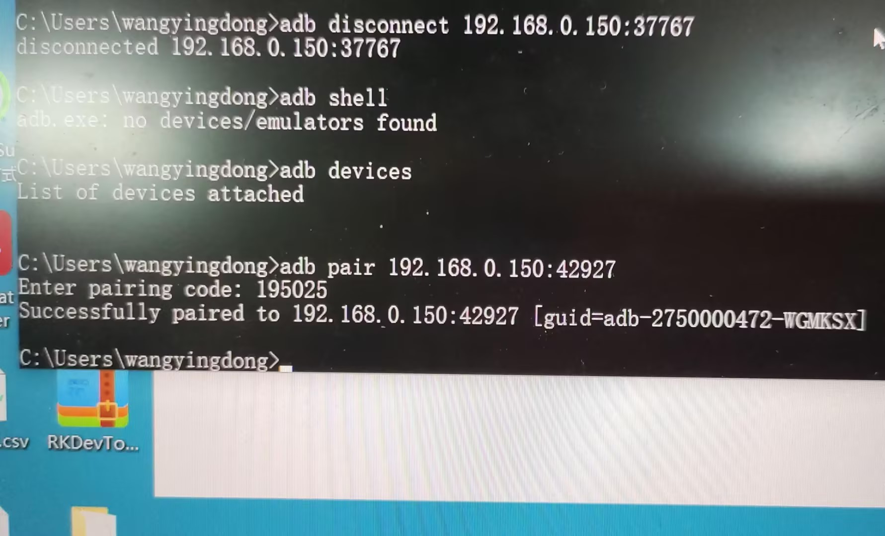

概要
有时候需要用到wifi adb场景
前提条件
连上wifi,开发者选项,打开 wifi 调试

使用方法
adb connect 192.168.0.150:37539
端口号使用使用
adb tcpip 6666修改adb disconnect 192.168.0.150:37539
wifi: adb tcpip 5555
切usb: adb usb
链接失败
关闭selinux权限验证
pari device with QR code
在新版android studio 的device manager里面,点击pair using Wi-Fi菜单,会弹出二维码
接着在开发者选项里面,选择Pair device with QR code扫码连接

Pair device with paring code
点击菜单,生成pair code

adb pair 192.168.0.150:42927
接着输入pair code

adb connect 192.168.0.150:37767